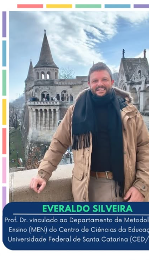

Everaldo Silveira
Prof. Dr. · Departamento de Metodologia de Ensino (MEN/CED/UFSC)
Professor Formador do PROFC/UFSC. Pesquisador focado no estudo de materiais manipulativos no ensino e na aprendizagem de Matemática, e na Modelagem na educação matemática.
Formação acadêmica
- Pós-Doutorado em Educação Matemática — Rutgers/EUA (2020)
- Doutorado em Educação Científica e Tecnológica / Educação Matemática — UFSC (2014)
- Mestrado em Educação / Educação Matemática — UFPR (2007)
- Especialização em Educação Matemática — UFOP (2003)
- Graduação em Matemática (Licenciatura) — UNIG (2000)
Área de atuação
- Formação inicial de professores nos cursos de Licenciatura em Pedagogia e Matemática pela UFSC
- Formação continuada de professores que ensinam Matemática pelo PROFC/UFSC
- Professor, pesquisador e orientador de mestrandos e doutorandos no PPGECT/UFSC